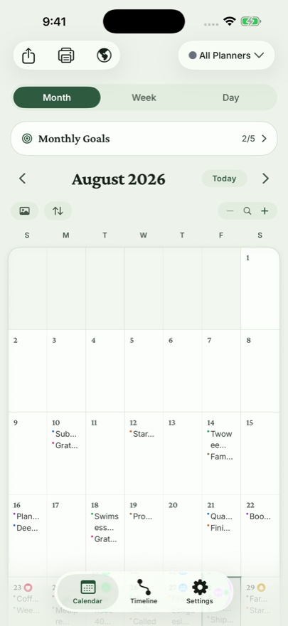

Gratitude journaling is the rare productivity practice with real research behind it — psychologist Robert Emmons' studies found that people who wrote weekly gratitude lists reported measurably higher well-being than those who logged hassles. The commercial version, The Five Minute Journal, distilled it to a formula anyone can keep: three things in the morning, a reflection at night.
The practice
- Three good things. Small beats grand: the coffee, the text from an old friend, the parking spot. Specificity is what rewires attention.
- One line of reflection. What made today feel like today?
Setting it up in Dayleaf
- Create a planner named Gratitude — give it its own color (and with Pro, its own handwritten-style font; many people like their gratitude entries to look different from work notes).
- Set the daily reminder for your quiet moment — most people pick the evening wind-down.
- Write three lines. On busy days, dictate them from your watch on the walk home.

Why a calendar journal fits gratitude
Gratitude compounds when you re-read it. Because Dayleaf entries live on the calendar, a month of gratitude is something you can see — and the On This Day view resurfaces last year's three good things exactly one year later, which is when they hit hardest.
🍃 Keep gratitude in its own planner and flip to it when you need it — a bad week reads differently after five minutes in a good month.